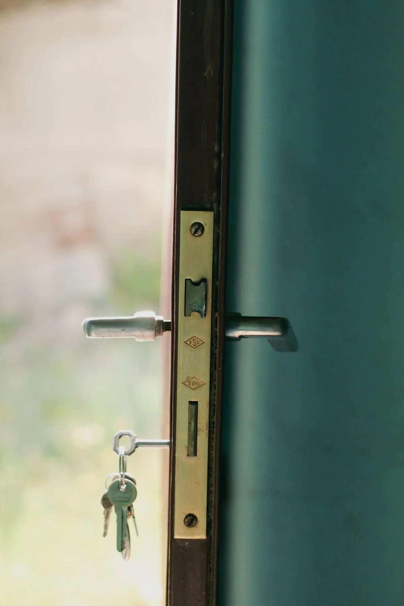
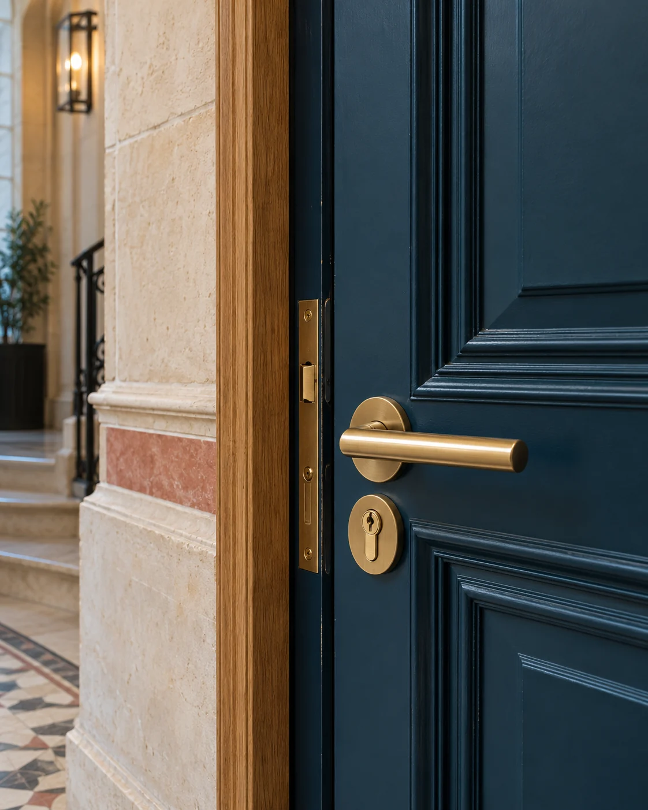

Décrire la situation
Type de porte, état de la serrure, adresse et horaire. Quelques informations permettent de préparer une réponse adaptée.

Porte claquée, clés perdues, serrure à remplacer ou projet de sécurité. Décrivez votre situation et confirmez la prestation avant l’intervention.
Une urgence se traite directement au téléphone. Pour des travaux, préparez votre demande avec les informations utiles à votre devis.
Porte claquée, porte verrouillée ou clé perdue : préparez le type de porte et la situation pour organiser une ouverture adaptée.
Découvrir la prestation ↗02Moderniser une fermeture usée, remplacer une serrure endommagée ou sécuriser l’accès après une perte de clés.
Découvrir la prestation ↗03Concevoir une entrée renforcée : blindage de la porte existante ou remplacement par un ensemble adapté.
Découvrir la prestation ↗04Faire examiner les dégâts et organiser la remise en sécurité de la porte et de ses organes de fermeture.
Découvrir la prestation ↗05Étudier les entrées de votre immeuble ou de votre local : autorisations, équipements et habitudes des utilisateurs.
Découvrir la prestation ↗06Installation ou dépannage de la fermeture de votre commerce selon son mécanisme et son état.
Découvrir la prestation ↗Le remplacement d’une fermeture commence par l’identification du modèle et de sa compatibilité avec la porte. Le niveau de protection et les équipements sont précisés sur votre devis.

Le blindage d’une porte existante et l’installation d’un bloc-porte répondent à des configurations différentes. L’état du bâti, les dimensions et les contraintes de copropriété orientent le projet.
Picard, Vachette, Bricard et Tordjman figurent parmi les références citées par le site actuel. Le modèle et les caractéristiques sont précisés sur votre devis.
Vous connaissez le périmètre de la prestation avant de donner votre accord.
Consulter les repères tarifaires ↗Type de porte, état de la serrure, adresse et horaire. Quelques informations permettent de préparer une réponse adaptée.
Le professionnel précise les travaux, les pièces éventuelles et les frais applicables. Vous examinez son devis avant le démarrage.
L’identité du partenaire, le délai et les conditions d’accès sont confirmés avec vous.
Avis publiés au sujet des interventions du réseau La Boîte à Moustaches. Les citations conservent leurs auteurs et leur source.
Le prix annoncé par téléphone a été respecté.
Extrait authentique · Consulter la source ↗Il l'a donc ouverte avec grande facilité
Extrait authentique · Consulter la source ↗De plus, leurs prix sont très raisonnables
Extrait authentique · Consulter la source ↗a finalement réparé la serrure au lieu de la changer
Extrait authentique · Consulter la source ↗une installation impeccable en peaufinant les réglages
Extrait authentique · Consulter la source ↗Équipe de serruriers très efficaces, rapides et disponibles. Tarification honnête et transparente. Recommande sans hésitation !
Avis publié · Consulter la source ↗Choisissez votre arrondissement ou indiquez votre commune dans la demande. Le délai est confirmé selon votre adresse et les disponibilités des artisans partenaires.
Consulter la zone d’intervention ↗Pour une urgence, appelez directement le 01 79 72 56 57.
Une porte claquée n’a pas nécessairement été fermée avec la clé. Décrivez la situation au conseiller : elle détermine la prestation à envisager et son prix.
Le site indique que le remplacement doit être limité aux situations où il est nécessaire. Le professionnel examine la porte et vous présente les options avant les travaux.
Indiquez le type de porte, la situation, votre adresse et l’horaire. Demandez le montant ou une estimation détaillée, puis la confirmation de la prestation avant de vous engager.
Le délai dépend de votre adresse et de la disponibilité des serruriers partenaires. Le conseiller vous confirme le délai au moment de l’appel.
Préparez une pièce d’identité et un document permettant de justifier votre droit d’accès au bien. Le professionnel vous précisera les vérifications nécessaires.
Appelez pour une urgence ou préparez
votre demande de devis en ligne.